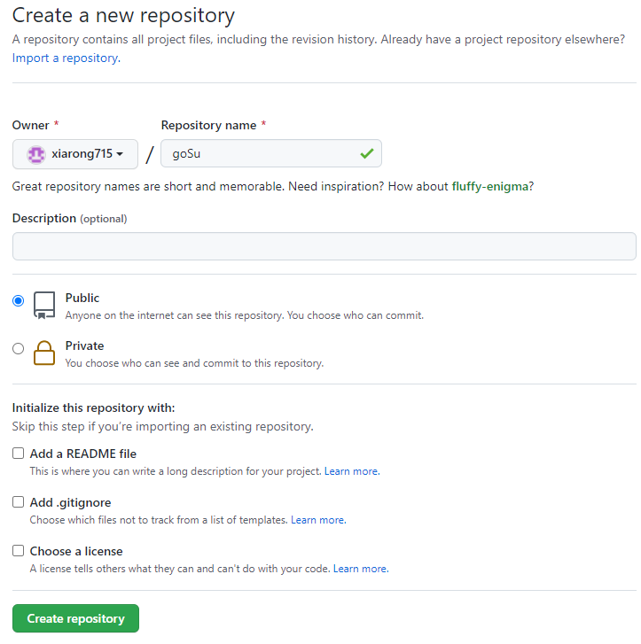
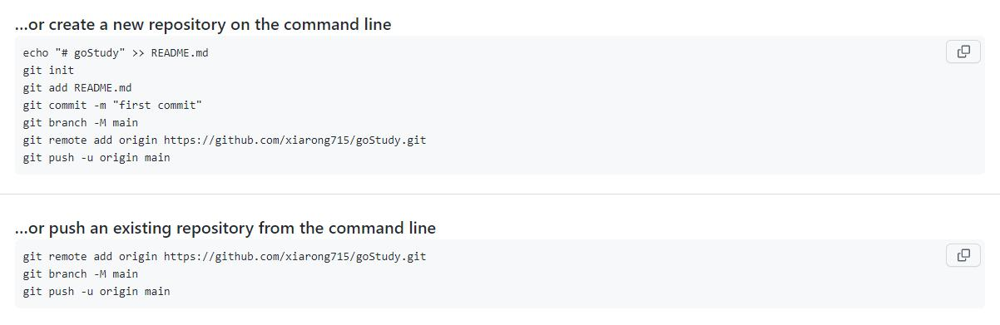
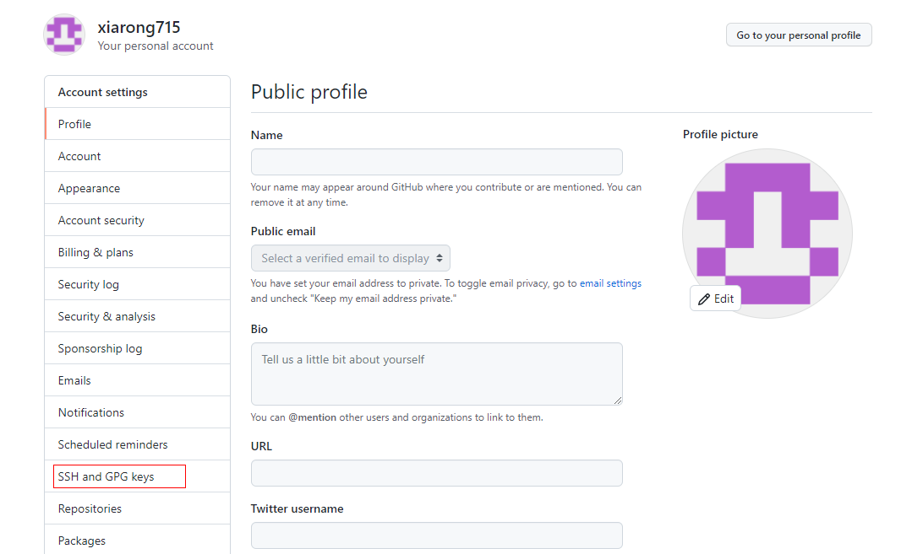
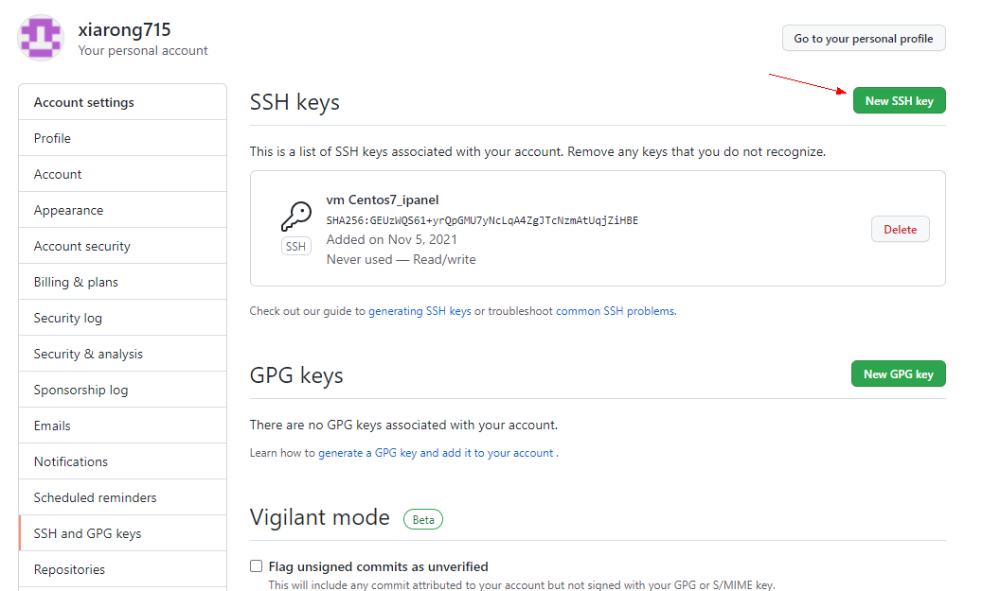
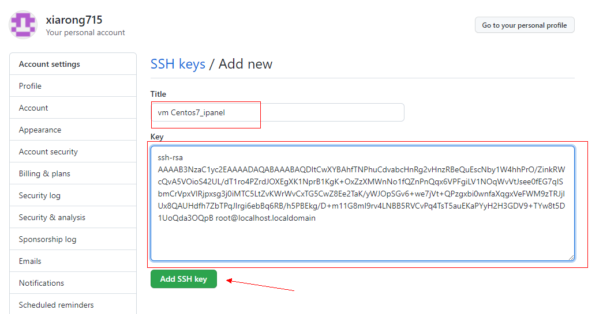
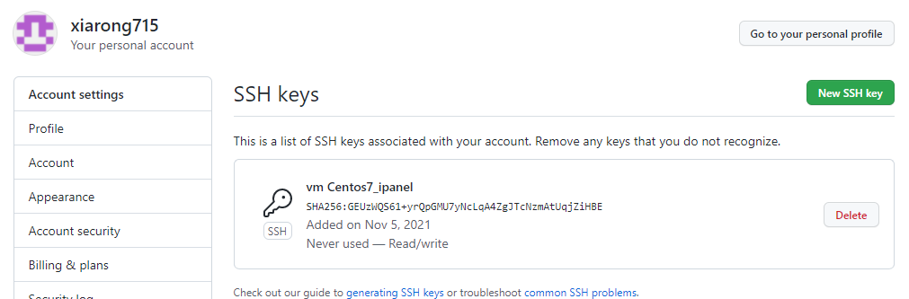
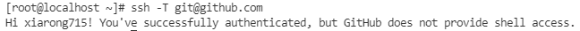

Git 基础
1.基础使用
|
|
2.本地新仓库上传到github
参考：a-local-floder-to-remote-git-repo
|
|
在github上新创建仓库

点击create repository，完成创建
|
|
github仓库创建完成后，官方给出的操作提示。

3.提交更新到仓库
工作目录下的所有文件不外乎两种状态：已跟踪和未跟踪。新创建的文件，还没纳入git管理，该文件就是未跟踪状态。已纳入git管理控制的文件，就是已跟踪状态。工作一段时间后，文件可能会有几种状态：未修改、已修改、已暂存。未修改状态就是在上次提交之后没有被修改；在上次提交之后，有修改过的文件就是已修改状态；修改之后提交到暂存区，下次提交时，会把暂存区的文件提交到仓库，暂存区的文件就是暂存状态。
几种状态的变化过程
untracked file tracked file
| |
|-------------------|--------------------------------|
| | |
| | |
| unmodified modified staged
| |---------------|----------------|
| git add | | |
|=================>>| | |
| | edit | |
| |=============>>| |
| git restore | | |
| --staged | | git add |
|<<=================| |==============>>|
| | | |
| | git commit |
| |<<==============================|
| | | |
| | | |
4.对应的基本操作
|
|
|
|
5.远程仓库添加、修改与删除
|
|
6.git tag
|
|
7.身份验证
git push上传要验证身份，因此在repo-url中带上用户名和密码，github不再支持在url中带上用户名和密码的形式。
|
|
参考：git remote repo address HTTPS改为SSH
github不再支持在URL中添加用户名和密码的认证形式，把HTTPS的URL改为SSH的形式
|
|
使用SSH的形式，需要在github的个人设置中添加主机的ssh public key。参考：add ssh pulic key to github
a.拷贝主机的ssh public key
|
|
ssh-rsa AAAAB3NzaC1yc2EAAAADAQABAAABAQDItCwXYBAhfTNPhuCdvabcHnRg2vHnzRBeQuEscNby1W4hhPrO/ZinkRWcQvA5VOioS42UL/dT1ro4PZrdJOXEgXK1NprB1KgK+OxZzXMWnNo1fQZnPnQqx6VPFgiLV1NOqWvVtJsee0fEG7qISbmCrVpxVIRjpxsg3j0iMTC5LtZvKWrWvCxTG5CwZ8Ee2TaK/yWJOpSGv6+we7jVt+QPzgxbi0wnfaXqgxVeFWM9zTRJjlUx8QAUHdfh7ZbTPqJlrgi6ebBq6RB/h5PBEkg/D+m11G8mI9rv4LNBB5RVCvPq4TsT5auEKaPYyH2H3GDV9+TYw8t5D1UoQda3OQpB root@localhost.localdomain
b.添加public key到github


c.粘贴第a步复制的ssh public key


d.测试能否登录到github.com
|
|
成功登录

注意：（有时行不时不行）
当 git@github.com:xiarong715/goStudy.git上传失败时，也可试试https://github.com/xiarong715/goStudy.git
|
|
前提是要在github.com填写公钥；